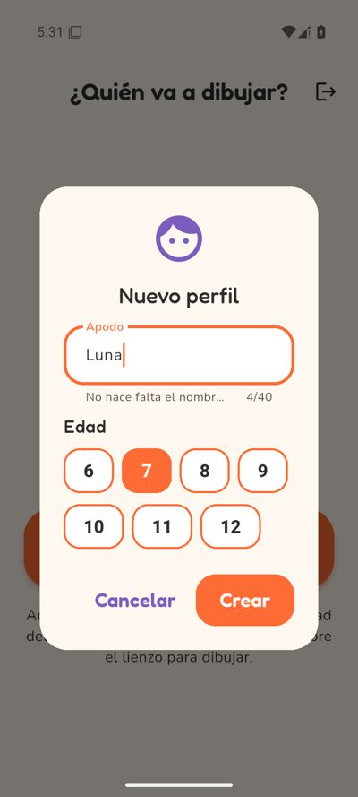
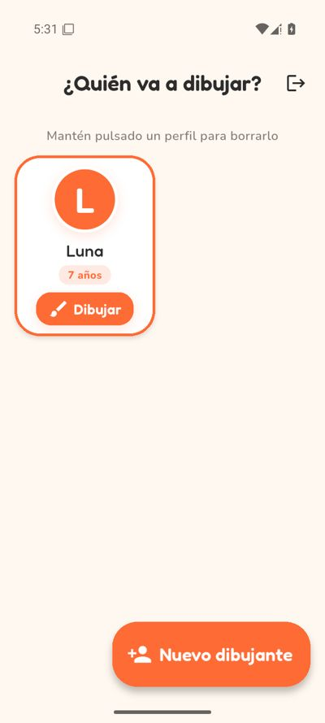
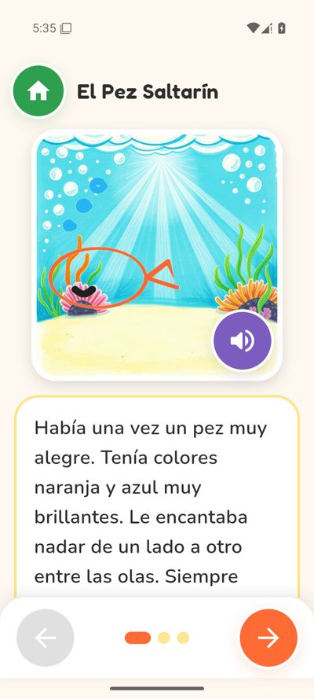
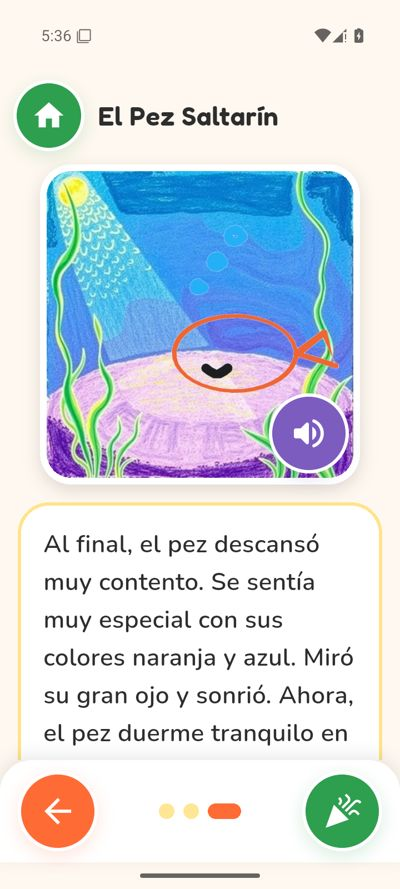
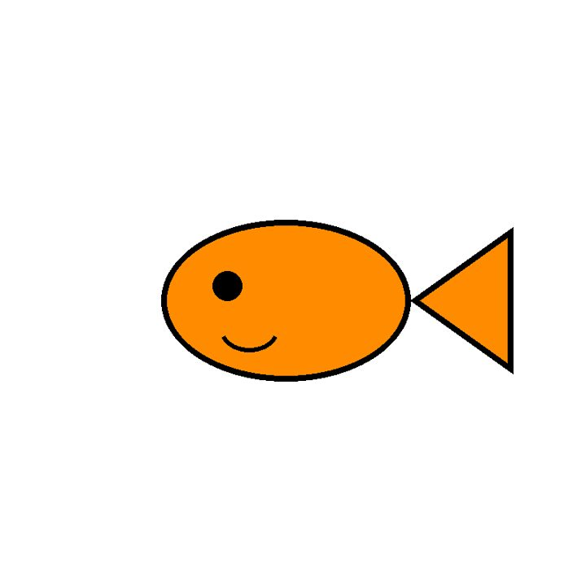
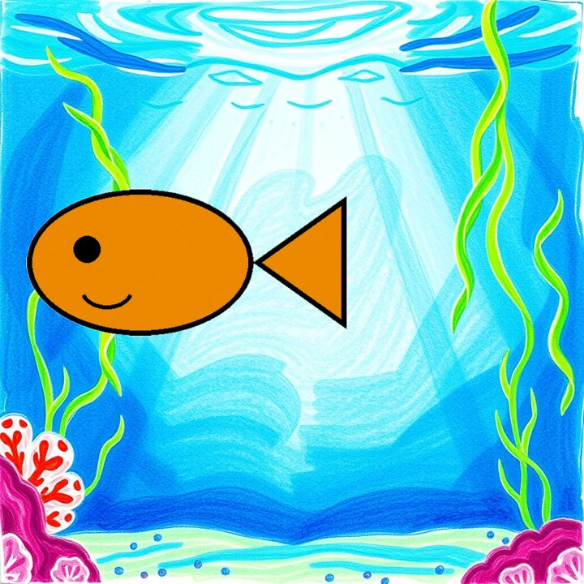

Instalar el APK
- Toca Descargar APK desde el celular Android.
- Abre el archivo descargado. Si Android lo pide, permite instalar apps de ese origen (Ajustes → Instalar apps desconocidas) y vuelve atrás.
- Instala, abre StoryDraw y crea una cuenta (no hace falta confirmar el correo).
- Si el servidor estaba dormido, la primera respuesta tarda cerca de un minuto (plan gratuito de Render).
| Versión | 0.2.0 (código 2), compilada desde main en el commit b4d9946 |
|---|---|
| Tipo | APK de depuración: instala sin tienda; no es la versión de publicación. El build de release minificado con R8 no arranca (falla shared_preferences_android); queda pendiente |
| Tamaño | 157.849.389 bytes (150,5 MiB): el modo depuración incluye varias arquitecturas y el motor sin optimizar |
| SHA-256 | 422f01a57532e0b4a3ba663f21da262814123d3d26565ea23b58de324f023625 |
| Backend | https://storydraw.onrender.com (producción) |
| Release | v0.2.0-presentacion en GitHub |
1Problema y contexto
Los niños dibujan mucho, pero el dibujo se queda en la hoja. Las apps de cuentos con IA, en cambio, inventan personajes ajenos al niño y casi siempre exigen leer. StoryDraw parte de lo que el niño ya hizo: su dibujo es el protagonista.
- Usuarios: niños de 6 a 12 años (el perfil solo acepta edades de 6 a 12) y el adulto responsable, que crea la cuenta y acepta el consentimiento.
- Qué resuelve: dibujo → personaje reconocido → cuento corto adaptado a la edad → tres láminas en estilo de lápices de colores con el dibujo recortado encima → narración en voz.
- Restricciones: contenido para menores (moderación obligatoria que no se puede apagar), datos del menor mínimos (el dibujo no se guarda; solo el cuento final) y presupuesto cero: todo corre en planes gratuitos (Render, Neon, Cloudflare Workers AI, GitHub Pages).
- UX sin lectura: íconos grandes, colores y voz, porque los más pequeños aún no leen con soltura.
2Casos de uso
| # | Actor | Caso de uso | Dónde está en el código |
|---|---|---|---|
| CU-01 | Adulto | Crear cuenta aceptando el consentimiento, iniciar y cerrar sesión, borrar la cuenta | POST /v1/auth/registro, /login, DELETE /v1/auth/cuenta |
| CU-02 | Adulto | Crear y borrar perfiles de niño (apodo y edad 6–12) | /v1/perfiles |
| CU-03 | Niño | Dibujar con el dedo en el lienzo (colores, grosor, deshacer) | app/lib/presentation/lienzo |
| CU-04 | Niño | Identificación asistida: la IA propone 2 a 4 opciones con su confianza y el niño elige o escribe la suya | POST /v1/dibujos/identificar |
| CU-05 | Niño | Ponerle nombre al personaje (opcional) | presentation/nombre |
| CU-06 | Sistema | Generar el cuento: identificar, escribir, moderar, ilustrar y narrar, con reintentos y degradación | POST /v1/cuentos (202) y dominio/orquestador.py |
| CU-07 | Niño | Ver el «momento mágico» mientras espera y luego leer o escuchar las tres páginas | presentation/momento_magico, presentation/cuento |
| CU-08 | Niño / adulto | Biblioteca de cuentos por perfil, legible sin conexión (caché Hive), y borrado de un cuento | GET /v1/perfiles/{id}/cuentos, DELETE /v1/cuentos/{id} |
| CU-09 | Operador | Panel de operación: latencia media y p95, costo por cuento y cola de moderación (solo administradores) | /v1/operacion/* |
3Criterios de calidad
Pruebas automatizadas (corridas hoy, 2026-11-23, sobre main b4d9946)
| Suite | Resultado | Qué cubre |
|---|---|---|
| Backend · pytest (Python 3.12) | 295 pasan, 2 omitidas, 0 fallan (297 en 19 archivos, 304 s) | Cuentas y JWT (9), verificación de correo (20) y registro sin verificación (8), invitado solo local (13), límite de tasa (4), borrado (5), pipeline y ajustes (17), tiempos y topes (9), moderación (7), adaptadores con HTTP simulado de Cloudflare y Ollama (47 + 7), rotación de cuentas de Cloudflare (19), voz y cupo diario (38 + 17), armonía de color y escenas (16 + 36), despliegue (19) e infraestructura (6) |
App · flutter test (Flutter 3.44.4) | 83 pasan, 0 fallan (16 archivos) | 49 de widgets (acceso, perfiles, lienzo, identificación, nombre, momento mágico, cuento y biblioteca, salir de la sesión), 25 de datos (repositorios con la API simulada), 5 de aplicación (flujo y sesión) y 4 de núcleo |
| Análisis estático | ruff check y ruff format: limpios (68 archivos) · flutter analyze: sin problemas | Reglas E, F, W, I, B, UP, ASYNC, S (seguridad), SIM y RUF |
Las 2 omitidas necesitan un MinIO real (STORYDRAW_MINIO_URL). Fuente: backend/tests y app/test del repo.
Moderación infantil (falla cerrada)
- Lista local de términos bloqueados (sin tildes ni mayúsculas), antes de llamar a ninguna IA.
- Llama Guard 3 8B (taxonomía de riesgos S1–S14) y, a la vez, una revisión infantil con LLM (prompt propio para 6–12 años). Las dos tienen que aprobar.
- Se modera la entrada (personaje, nombre y rasgos del dibujo) y el cuento completo. Si el cuento se rechaza, se escribe otro (hasta 2 veces); si nada pasa, el cuento queda rechazado y el niño no ve nada.
- Si un moderador no responde, tarda de más o devuelve algo ilegible, cuenta como rechazo. La voz solo lee texto ya aprobado.
Privacidad y seguridad
- Contraseñas con Argon2id; sesión con JWT; consentimiento del adulto obligatorio en el registro.
- El dibujo viaja en memoria y no se persiste; las láminas están en un bucket privado y solo la API las sirve a su dueño. Medido hoy: pedir una lámina sin sesión da 401.
- Límites de tasa: 10/min en autenticación e identificación; 5 cuentos/min por IP y 30 al día por cuenta.
- Ninguna clave en el cliente: las claves de IA viven solo en las variables del backend. En producción se rechazan los proveedores falsos y el modo invitado.
Rendimiento medido hoy en producción
| Medida | Valor |
|---|---|
| Despertar el servidor (primera petición tras dormir) | 43,6 s |
/salud con el servidor despierto | 3,2 s |
| Registro · inicio de sesión | 1,9 s · 1,6 s |
| Identificar el dibujo (visión) | 4,2 s → «un pez» con confianza 0,95 |
| Cuento completo (de enviar a listo, con voz) | 38,9 s, 3 páginas de 47 a 50 palabras, sin avisos |
| Lámina · audio por página | PNG 1024×1024 de 1,3 a 1,9 MB · MP3 de 98 a 124 KB |
Medido con un script HTTP contra https://storydraw.onrender.com el 2026-11-23 (una cuenta de prueba y un cuento). Topes del backend: 45 s por llamada a Cloudflare, 180 s por cuento, 2 reintentos por paso.
4Arquitectura técnica
En el celular, desliza el diagrama hacia los lados.
- Cliente en capas (
app/lib):presentation → application → domain ← data. La URL del backend se inyecta al compilar; el cliente no conoce ningún proveedor de IA. - Backend hexagonal: el dominio define puertos (
IVision,ITexto,IModerador,IImagen,IVoz,ICorreo) y cada proveedor es un adaptador. Cambiar de proveedor = una clase y una variable (PROVEEDOR_*). Cada adaptador tiene un gemelo falso para las pruebas. - Asíncrono:
POST /v1/cuentosresponde 202 al instante y la app consultaGET /v1/cuentos/{id}mientras muestra el momento mágico. - Despliegue gratuito: Render (Docker,
render.yaml, despliegue manual para no gastar cuota), Neon (PostgreSQL), bucket S3 privado, GitHub Pages para la web (Actions correflutter testantes de publicar).
5Integración de IA
| Paso | Modelo (producción) | Qué hace |
|---|---|---|
| 1 · Identificar | @cf/google/gemma-4-26b-a4b-it (visión) | Propone 2 a 4 hipótesis con confianza y lee los rasgos del dibujo (colores, partes, emoción) en JSON con esquema |
| 2 · Escribir | @cf/google/gemma-4-26b-a4b-it | Cuento de exactamente 3 páginas (40–70 palabras) para la edad del perfil, con el nombre y los rasgos reales; describe en inglés el fondo de cada página (hábitat del protagonista) |
| 3 · Moderar | @cf/meta/llama-guard-3-8b + gemma-4 con prompt infantil | Dos capas que deben aprobar, más la lista local; falla cerrada |
| 4 · Ilustrar | @cf/black-forest-labs/flux-1-schnell (4 pasos) | Fondos en lápices de colores con una paleta que contrasta con el dibujo (ΔE00 ≥ 30) y un espacio libre; Pillow recorta el dibujo y lo compone encima |
| 5 · Narrar | @cf/deepgram/aura-2-es, voz «javier» | MP3 por página, en paralelo con los fondos; tope de 3 cuentos con voz al día y, sin cupo, el cuento sale sin voz y sin error |
- Robustez: reintento por paso (2), regeneración si la moderación rechaza (2), 45 s por llamada y 180 s por cuento. Si la visión cae, el niño escribe qué dibujó; si la imagen cae, se usa un fondo dibujado con Pillow y el cuento sale con aviso.
- Rotación de cuentas de Cloudflare: cada cuenta tiene 10.000 neuronas gratis al día. Ante un 429 por cupo, el backend marca la cuenta agotada hasta las 00:00 UTC (la vuelve a probar cada 30 min) y repite la misma petición con la siguiente; ante un 429 de ritmo la aparta 60 s. Hasta 5 cuentas.
- Costo: cada llamada registra neuronas y su equivalente en USD (0,011 USD por 1.000 neuronas) para el panel de operación. Un cuento sin voz gastó unas 230 neuronas en producción (2026-11-04); la voz Aura-2 suma unas 2.150.
- Ollama local: con
gemma3:4bel mismo backend corre sin internet ni costo (visión, texto y moderación de desarrollo); la imagen queda en «omitido» y el cuento sale con su aviso. - Prompts del producto: texto completo en la página de prompts.
6Funcionamiento de la aplicación
Comprobado hoy (2026-11-23) instalando este mismo APK (el archivo del botón de descarga tiene el mismo SHA-256), en un emulador Android 15 (API 35, x86_64) contra el backend de producción:
| Función | Resultado |
|---|---|
| Instalar y abrir | Funciona |
| Crear cuenta (sin confirmar correo) y entrar | Funciona |
| Crear perfil (apodo y edad) | Funciona |
| Dibujar en el lienzo (colores y grosores) | Funciona |
| Identificación asistida | «un pez» 90 %, «un delfín» 40 %, «un submarino» 20 % |
| Momento mágico y cuento con 3 láminas | «El Pez Saltarín», listo; el dibujo aparece dentro de cada lámina |
| Voz (altavoz sobre la lámina) | Descarga el MP3 y lo decodifica (el emulador corría sin salida de audio) |
| Biblioteca del perfil | Muestra el cuento con su portada |
| Cerrar sesión y volver a entrar | Funciona; el perfil sigue ahí |
Estado del backend medido hoy (GET /salud): base de datos ok; visión, texto e imagen en cloudflare; moderación cloudflare-llamaguard; voz cloudflare; correo ninguno.
main (el despliegue en Render es manual). La app no cambió entre esa versión y main, y el flujo completo funcionó; lo nuevo de main que aún no está en producción es del backend (rotación de cuentas de Cloudflare y ajustes de voz y fondos).7Flujo principal paso a paso
- Acceso. El adulto crea la cuenta (correo, contraseña de 10+ caracteres y consentimiento) y entra.
- Perfil. Elige «¿Quién va a dibujar?» o crea un perfil con apodo y edad.
- Dibujo. El niño dibuja con el dedo y toca listo.
- Identificación. La IA propone qué es (barra de confianza) y el niño elige o escribe; opcionalmente le pone nombre.
- Momento mágico. Animación de espera mientras el backend identifica, escribe, modera, ilustra y narra (≈40 s medido hoy).
- Cuento. Tres láminas con el dibujo dentro, texto grande y botón de voz. El cuento queda en la biblioteca del perfil.








Capturas reales del APK 0.2.0 en el emulador, contra producción, el 2026-11-23.
Ejemplo real generado hoy en producción




«Las aventuras de Burbuja» (página 1): «Había una vez un pez llamado Burbuja. Burbuja era de color naranja y tenía una gran sonrisa. Vivía muy feliz en el fondo del mar. A Burbuja le encantaba nadar entre las plantas y saludar a sus amigos con su cola triangular. ¡El océano era su lugar favorito para jugar!»
Salida real de https://storydraw.onrender.com el 2026-11-23: identificación «un pez» (0,95), personaje y nombre «Burbuja», listo en 38,9 s.
8Documentos técnicos
- README: arquitectura, cómo correr backend y app, variables de entorno.
- CONTEXTO-IA.md: el proyecto explicado para que una IA lo cuente a quien lo continúe.
- render.yaml: despliegue declarativo, secretos sin valor.
- Pruebas del backend · pruebas de la app.
- Prompts de construcción y del producto (criterio SWNT).
Pila
Flutter 3.44 · Riverpod 3 · Dio · Hive · perfect_freehand · just_audio — Python 3.12 · FastAPI 0.115 · Pydantic 2 · SQLAlchemy 2 async · Alembic · Pillow · PyJWT · Argon2id · slowapi — PostgreSQL (Neon) · Render · Cloudflare Workers AI · GitHub Pages.